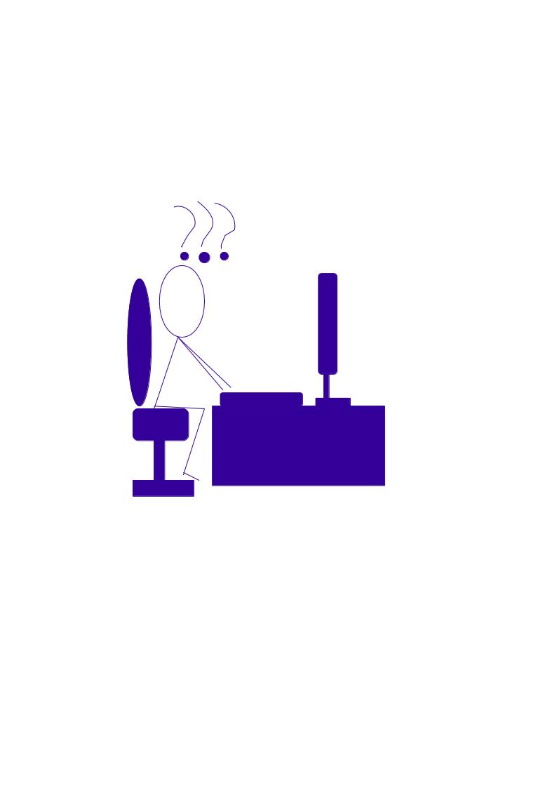

If you're wondering how this is geeky, the very fact that I've written this page with HTML should be. The fact that it's being hosted on GitHub comes as an added bonus.
I have just started this website, so it's practically threadbare. More content will be coming out, over the next few weeks.
For now, all this home page features is this thing I created on a drawing program, so here it is.
Fits this page, doesn't it?